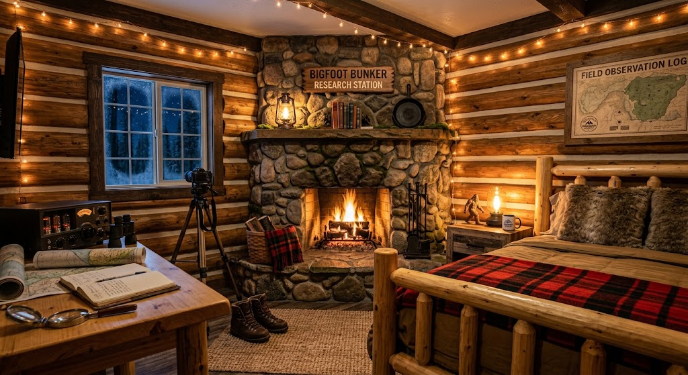

The Bigfoot Bunker
Fortified deep within our ground floor structure, The Bigfoot Bunker is built for field researchers who value privacy, comfort, and safety after a long day in the woods. Built with rustic cedar framing and reinforced window shutters, it provides total protection against unscheduled cryptid visits.

Amenities & Features
- Double queen beds crafted from sturdy local timber with memory foam mattresses
- Motion-sensor perimeter radar alert display unit mounted next to the nightstand
- Stone fireplace hearth stocked daily with fresh, dry cedar logs
- Dedicated gear mudroom entrance with boot dryers and plaster cast prep stations
Rates & Occupancy
- Nightly Rate
- $180.00 per night (plus local taxes)
- Maximum Occupancy
- 4 Adult Researchers
- Research Expedition Discount
- $150.00 per night for stays of 3 consecutive nights or longer